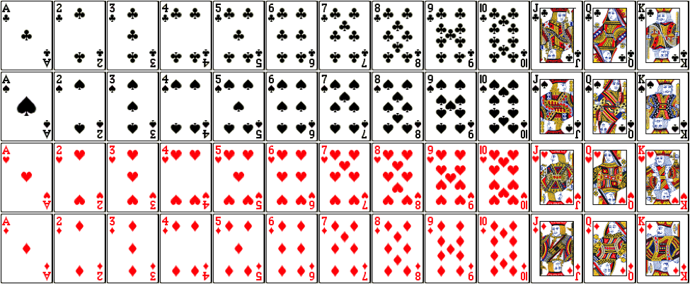
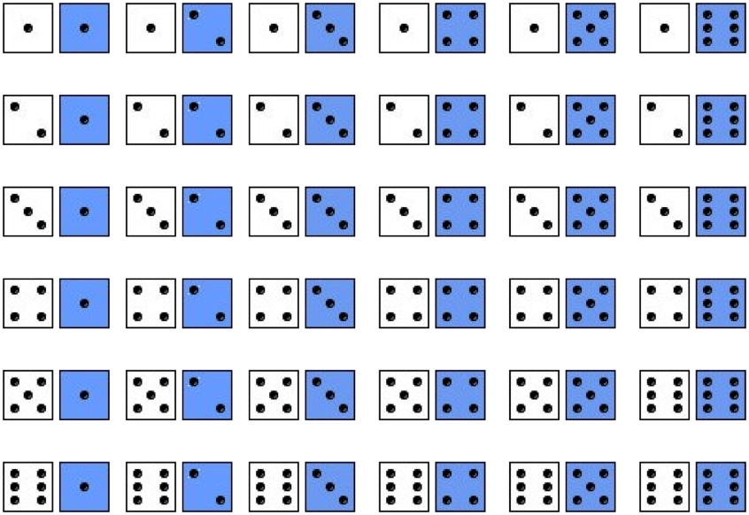

Lecture 2
Qi Wang, Department of Statistics
Aug 22, 2018
Consider a standard deck of 52 playing cards. You will draw one card out of a thoroughly shuffled deck of cards.  Define the following events: H = the suit is a heart, R = the card is red, F = the card is a face card (i.e. Jack, Queen or King)
Your friend tells you the following probabilities for a weighted die. You will roll the die one time.
| Die Roll(X) | 1 | 2 | 3 | 4 | 5 | 6 |
| Probability | 0.5 | 0.1 | 0.1 | 0.1 | 0.1 | 0.1 |
A fair six-sided die is rolled twice 